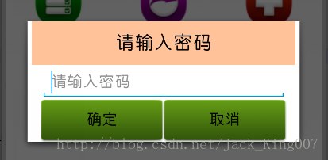

快速开发之01——button的按钮效果
这一章非常基础，也是很人新手会用到的一端代码，让你的按钮不再单调

不说多了贴代码
<Button
android:background="@drawable/button_select"
android:id="@+id/ok"
android:layout_width="140dip"
android:layout_height="wrap_content"
android:text="确定" />
<Button
android:background="@drawable/button_select"
android:id="@+id/cancel"
android:layout_width="140dip"
android:layout_height="wrap_content"
android:text="取消" />
</pre><pre name="code" class="java">其中button的属性有一个background设置一个xml文件 button_select 将两个效果图引入 点击就会有效果了
先贴button_select的代码
<?xml version="1.0" encoding="utf-8"?>
<selector xmlns:android="http://schemas.android.com/apk/res/android">
<item android:state_pressed="true"
android:drawable="@drawable/function_greenbutton_pressed" /> <!-- pressed -->
<item android:state_focused="true"
android:drawable="@drawable/function_greenbutton_pressed" /> <!-- focused -->
<item android:drawable="@drawable/function_greenbutton_normal" /> <!-- default -->
</selector>让我们先来看看两个效果图
相信大家看出来了有啥不同，其实大家可以看到别人的APP有些按钮漂亮可以逆向破解出来 把图片收藏起来 图片是.9的格式